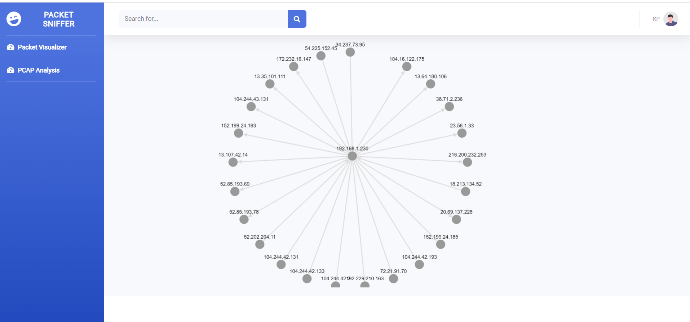

Intro to Packet Sniffing
In today's interconnected world, network security is important. One fundamental aspect of this field is understanding network traffic, and that's where the concept of packet sniffing comes into play. Packet sniffing is a method used to monitor and analyze network traffic. By capturing, inspecting, and interpreting the packets that travel through a network, we gain insights into what data is being transferred, how, and by whom.
What is a Packet?
A packet is a fundamental concept that signifies a small portion of data dispatched over a network. Whether you're navigating the internet, sending an email, or streaming a video, the data isn't transmitted as one large block, but rather is broken down into bite-sized pieces called packets. Each packet carries important information, like the sender's and receiver's IP addresses and the actual data content. They traverse the network, often taking different paths, until they reach their destination. Once there, they are reassembled to form the original data. The practice of capturing and analyzing these packets in transit is known as 'packet sniffing'. This technique, when used ethically, is a powerful tool for understanding network behavior, troubleshooting issues, and enhancing network security.
The Importance of Packet Sniffing in Security
Network Troubleshooting
Packet sniffing allows network administrators to troubleshoot network problems by providing a granular view of traffic patterns, identifying bottlenecks, and detecting anomalies.
Security Monitoring and Intrusion Detection
Packet sniffers can monitor network traffic for suspicious activity, such as an unusually high volume of data being transferred to an external IP address. This can signal a data breach or an ongoing attack.
Forensic Analysis and Incident Response
In the event of a security incident, packet sniffers can be used to perform a detailed analysis of network traffic during the incident timeframe. This can help to understand the incident's scope, its origin, and the attacker's methods.
Introducing PacketSniffer
As an example of a practical tool in this field, I'd like to introduce a project I developed called PacketSniffer.The tool allows you to capture network traffic based on given preferences such as ports and protocols. I intially developed it to help me understand networking and the importance of packet analysis. Although It is still a work in progress, it provides a more basic and simple interface versus more comprehensive tools like Wireshark. It current only supports Windows 8/8.1/10 and also provides a feature called Packet Visualizer, which displays network traffic using visualizations as shown below.

Figure 1: Oubtound traffic on a host shown on Packet Visualizer
Conclusion
Packet sniffing is a vital tool in network security and management. It can help aid in troubleshooting network issues, spotting suspicious activity, and conducting post-incident analysis. By offering insights into traffic patterns and potential threats, packet sniffing can significantly contribute to enhancing and maintaining network security.